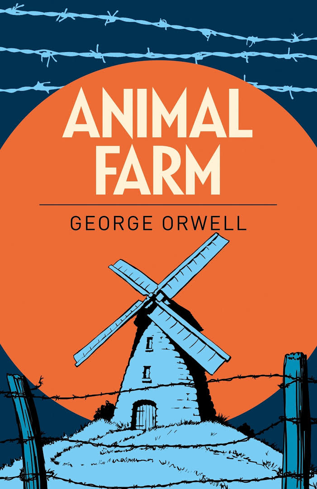

ცხოველების ფერმა
ინფორმაცია წიგნზე
ავტორი: ჯორჯ ორუელი
ჟანრი: დისტოპიური ფიქცია, სოციალური სამეცნიერო ფანტასტიკა,პოლიტიკური
გამოშვების თარიღი: 1945 წელი
აღწერა:
როდესაც Manor Farm-ის დაჩაგრული ცხოველები ჩამოაგდებენ თავიანთ ბატონს, მისტერ ჯონსს და თავად აიღებენ ფერმას, ისინი წარმოიდგენენ, რომ ეს არის თავისუფლებისა და თანასწორობის ცხოვრების დასაწყისი. მაგრამ თანდათან მზაკვარი, დაუნდობელი ელიტა მათ შორის, რომელსაც ღორები ნაპოლეონი და სნოუბოლი მოაწყვეს, იწყებს კონტროლის აღებას. მალე სხვა ცხოველები აღმოაჩენენ, რომ ყველა ისეთი თანასწორი არ არის, როგორც ეგონათ, და უიმედოდ აღმოჩნდებიან მახეში, როდესაც ტირანიის ერთი ფორმა მეორეთი იცვლება. ორუელის შემზარავი „ზღაპარი“ არის იდეალიზმის მარადიული და დამანგრეველი სატირა, რომელსაც ღალატობს ძალაუფლება და კორუფცია.
ავტორი: ერიკ არტურ ბლერი, უფრო ცნობილი ჯორჯ ორუელის სახელით, იყო ინგლისელი ავტორი და ჟურნალისტი. მისი ნამუშევარი გამოირჩევა მახვილგონივრული და გონიერებით, სოციალური უსამართლობის ღრმა ცნობიერებით, ტოტალიტარიზმისადმი მძაფრი წინააღმდეგობით, ენის სიცხადისადმი გატაცებით და დემოკრატიული სოციალიზმის რწმენით.1941-1943 წლებში ორუელი პროპაგანდაზე მუშაობდა BBC-სთვის. 1943 წელს იგი გახდა ყოველკვირეული მემარცხენე ჟურნალის Tribune-ის ლიტერატურული რედაქტორი. ის იყო ნაყოფიერი პოლემიკოსი ჟურნალისტი, სტატიის ავტორი, ლიტერატურათმცოდნე, მიმომხილველი, პოეტი და მხატვრული ლიტერატურის მწერალი და, შესაძლოა, მეოცე საუკუნის ინგლისური კულტურის საუკეთესო მემატიანედ.ორუელის გავლენა თანამედროვე კულტურაზე, პოპულარულ და პოლიტიკურზე, გრძელდება მისი გარდაცვალებიდან ათწლეულების შემდეგ. მისი რამდენიმე ნეოლოგიზმი, ტერმინ „ორველიანთან“ ერთად - ახლა არის ნებისმიერი მჩაგვრელი ან მანიპულაციური სოციალური ფენომენი, რომელიც ეწინააღმდეგება თავისუფალ საზოგადოებას - ხალხურ ენაში შევიდა.
ავტორის ხელმოწერა: